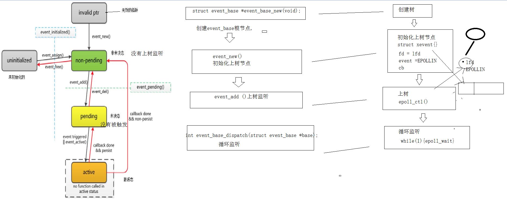

学习目标
- 描述什么是libevent并掌握如何安装
- 掌握event_base的作用和使用方法
- 熟练掌握libevent库中的事件循环
- 掌握Event事件的使用方法
- 掌握BufferEvent的工作方式
- 掌握使用Libevent实现tcp服务器端流程
- 掌握使用Libevent实现tcp客户端流程
1 libevent
网络的事件库
跨平台,支持多种多路io复用
核心: 以事件驱动(触发),回调
2 安装libevent
解压:
tar -xzvf libevent-2.0.22-stable.tar.gz -C ./install
执行configure ,检测环境生成makefile
./configure
编译
sudo make
安装
sudo make install
库的路径: /usr/local/lib
头文件目录: /usr/local/include'
编译时需要指定库名 -levent
2 libevent的使用
创建event_base根节点
struct event_base *event_base_new(void);
返回值值就是event_base根节点地址
释放根节点
void event_base_free(struct event_base *);
循环监听
int event_base_dispatch(struct event_base *base);
相当于 while(1){epoll_wait}循环监听
退出循环监听
int event_base_loopexit(struct event_base *base, const struct timeval *tv); //等待固定时间之后退出
int event_base_loopbreak(struct event_base *base);//立即退出
3 libevent时间触发流程

4 初始化上树节点
struct event *event_new(struct event_base *base, evutil_socket_t fd, short events, event_callback_fn cb, void *arg);
参数:
base: event_base根节点
fd: 上树的文件描述符
events: 监听的事件
#define EV_TIMEOUT 0x01 //超时事件
#define EV_READ 0x02 //读事件
#define EV_WRITE 0x04 //写事件
#define EV_SIGNAL 0x08 //信号事件
#define EV_PERSIST 0x10 //周期性触发
#define EV_ET
cb: 回调函数
typedef void (*event_callback_fn)(evutil_socket_t fd, short events, void *arg);
arg: 传给回调函数的参数
返回值: 初始化好的节点的地址
5 节点上树
- int event_add(struct event *ev, const struct timeval *timeout);
ev: 上树节点的地址
timeout: NULL 永久监听 固定时间 限时等待
6 下树
- int event_del(struct event *ev);
ev: 下树节点的地址
7 释放节点
- void event_free(struct event *ev);
8 使用libevent编写tcp服务器流程
创建套接字
绑定
监听
创建event_base根节点
初始化上树节点 lfd
上树
循环监听
收尾
8 bufferevent事件
普通的event事件 文件描述符 事件(底层缓冲区的读事件或者写事件) 触发 回调
高级的event事件 bufferevent事件
核心: 一个文件描述符 两个缓冲区 3个回调

;9 bufferveent事件的监听流程

10 bufferevent事件的API
创建新的节点
struct bufferevent *bufferevent_socket_new(struct event_base *base, evutil_socket_t fd, int options);
参数:
base : event_base 根节点
fd: 要初始化上树的文件描述符
options :
BEV_OPT_CLOSE_ON_FREE -- 释放bufferevent自动关闭底层接口
BEV_OPT_THREADSAFE -- 使bufferevent能够在多线程下是安全的
返回值:
新建节点的地址
设置节点的回调
释放bufferevent
- void bufferevent_setcb(struct bufferevent *bufev,
bufferevent_data_cb readcb, bufferevent_data_cb writecb,
bufferevent_event_cb eventcb, void *cbarg);
参数:
bufev : 新建的节点的地址
readcb : 读回调
writecb : 写回调
eventcb : 异常回调
cbarg: 传给回调函数的参数
typedef void (*bufferevent_data_cb)(struct bufferevent *bev, void *ctx);// 读写回调
typedef void (*bufferevent_event_cb)(struct bufferevent *bev, short what, void *ctx);//事件回调
BEV_EVENT_EOF, 对方关闭连接
BEV_EVENT_ERROR，出错
BEV_EVENT_TIMEOUT,超时
BEV_EVENT_CONNECTED 建立连接成功
让事件使能
- int bufferevent_enable(struct bufferevent *bufev, short event);//EV_READ EV_WRITE
- int bufferevent_disable(struct bufferevent *bufev, short event);//EV_READ EV_WRITE
发送数据
- int bufferevent_write(struct bufferevent *bufev, const void *data, size_t size);
bufferevent_write是将data的数据写到bufferevent的写缓冲区
接收数据
- size_t bufferevent_read(struct bufferevent *bufev, void *data, size_t size);
bufferevent_read 是将bufferevent的读缓冲区数据读到data中，同时将读到的数据从bufferevent的读缓冲清除。
11 连接侦听器
创建套接字 绑定 监听 提取
struct evconnlistener *evconnlistener_new_bind(struct event_base *base,
evconnlistener_cb cb, void *ptr, unsigned flags, int backlog,
const struct sockaddr *sa, int socklen);
参数:
base : base根节点
cb : 提取cfd后调用的回调
ptr : 传给回调的参数
flags :
LEV_OPT_LEAVE_SOCKETS_BLOCKING 文件描述符为阻塞的
LEV_OPT_CLOSE_ON_FREE 关闭时自动释放
LEV_OPT_REUSEABLE 端口复用
LEV_OPT_THREADSAFE 分配锁，线程安全
sa : 绑定的地址信息
socklen : sa的大小
返回值: 连接侦听器的地址
返回值: 连接侦听器的地址
回调
typedef void (*evconnlistener_cb)(struct evconnlistener *evl, evutil_socket_t fd, struct sockaddr *cliaddr, int socklen, void *ptr);
参数:
evl : 链接侦听器的地址
fd : cfd
cliaddr: 客户端的地址信息
ptr: evconnlistener_new_bind传过来的参数
12 创建套接字 连接服务器
struct bufferevent *bufferevent_socket_new(struct event_base *base,-1, int options);
int bufferevent_socket_connect(struct bufferevent *bev, struct sockaddr *serv, int socklen);
bev: 新建的节点
serv: 服务器的地址信息
socklen: serv长度